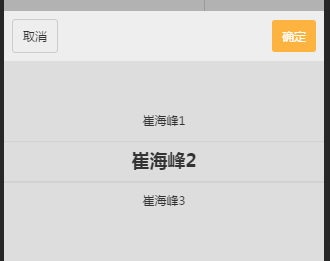

Picker_One_Column.js简介
Picker_One_Column.js是一个单列的Picker组件，
绑定在yyq_components原型上的picker_one_column对象.
说明:使用前请先调用initData(arg,option)初始化数据，必传参数arg表示要显示的数据，数据格式可以是对象集合，也可以是字符串集合String:["测试","测试"],Object：[{text:"测试",value:"测试"}],
option表示组件的配置项，包含有autoHide字段，默认值是true表示点击组件以外的部分是否点击组件外部自动隐藏组件。以及ConfirmCallback字段，表示点击确定之后的回调函数，类型Function,返回选中的值。以及CancelCallback字段，表示点击取消之后调用的回调函数，类型Function.
初始化完成之后，每次显示都只需要调用show(val),val传入初始化值，如果之前初始化的时候传入的对象集合，那么这里需要默认的值就要传对象的text字段的值。
//示例:
//调用显示前，先初始化数据
yyq_components.picker_one_column.initData(["崔海峰1","崔海峰2","崔海峰3"],{
autoHide:false,
ConfirmCallback:function(){
//do something....
},
});
//显示组件，如果组件的原始数据没有变，那么只需要初始化一次数据就可以
yyq_components.picker_one_column.show("崔海峰2");
//如图所示:
